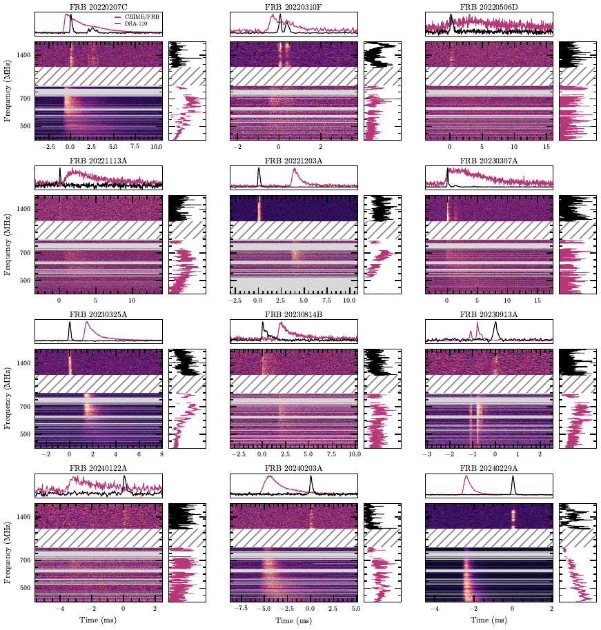

{kind=link}
fig1-gallery: Figure 1: twelve-burst CHIME/FRB and DSA-110 gallery
Status: needs_revision

- Manuscript target
figures/codetection_data_grid.pdf- Candidate SHA-256
dda668128aa6e4f942f07a3feffc447526d21ff56ef7bbfcacd3f87ff7892e76- Generator
scripts/plot_codetection_data_grid.py- Required provenance
- adopted DM and uncertainty for every burst; input waterfall path and SHA-256 for both telescopes; input-product DM and applied re-dedispersion offset; time/frequency resolution and mask summary
- Frozen evidence
- dm-catalog, joint-render-manifest
- DM record
[ { "adopted_dm": "262.361665", "adopted_sigma": "0.010372", "adoption": "chime_primary", "between_band_sigma": "0.023274", "chime_dm": "262.361665", "chime_minus_dsa": "0.045268", "chime_sigma": "0.010372", "dsa_dm": "262.316397", "dsa_sigma": "0.029297", "gaussian_joint_dm": "262.347322", "gaussian_joint_sigma": "0.021060", "nick": "zach", "tns": "FRB 20220207C" }, { "adopted_dm": "462.188773", "adopted_sigma": "0.005000", "adoption": "chime_primary", "between_band_sigma": "0.000000", "chime_dm": "462.188773", "chime_minus_dsa": "-0.004032", "chime_sigma": "0.005000", "dsa_dm": "462.192806", "dsa_sigma": "0.029313", "gaussian_joint_dm": "462.188887", "gaussian_joint_sigma": "0.004929", "nick": "whitney", "tns": "FRB 20220310F" }, { "adopted_dm": "397.015535", "adopted_sigma": "0.005000", "adoption": "chime_primary", "between_band_sigma": "0.000000", "chime_dm": "397.015535", "chime_minus_dsa": "0.074489", "chime_sigma": "0.005000", "dsa_dm": "396.941046", "dsa_sigma": "0.082506", "gaussian_joint_dm": "397.015263", "gaussian_joint_sigma": "0.004991", "nick": "oran", "tns": "FRB 20220506D" }, { "adopted_dm": "411.435717", "adopted_sigma": "0.005000", "adoption": "chime_primary", "between_band_sigma": "0.064884", "chime_dm": "411.435717", "chime_minus_dsa": "-0.116990", "chime_sigma": "0.005000", "dsa_dm": "411.552707", "dsa_sigma": "0.072400", "gaussian_joint_dm": "411.471916", "gaussian_joint_sigma": "0.054079", "nick": "isha", "tns": "FRB 20221113A" }, { "adopted_dm": "602.377821", "adopted_sigma": "0.006047", "adoption": "chime_primary", "between_band_sigma": "0.000000", "chime_dm": "602.377821", "chime_minus_dsa": "-0.001370", "chime_sigma": "0.006047", "dsa_dm": "602.379192", "dsa_sigma": "0.012800", "gaussian_joint_dm": "602.378071", "gaussian_joint_sigma": "0.005467", "nick": "wilhelm", "tns": "FRB 20221203A" }, { "adopted_dm": "610.289070", "adopted_sigma": "0.005000", "adoption": "chime_primary", "between_band_sigma": "0.039496", "chime_dm": "610.289070", "chime_minus_dsa": "0.056527", "chime_sigma": "0.005000", "dsa_dm": "610.232543", "dsa_sigma": "0.007096", "gaussian_joint_dm": "610.261030", "gaussian_joint_sigma": "0.028262", "nick": "phineas", "tns": "FRB 20230307A" }, { "adopted_dm": "912.407552", "adopted_sigma": "0.015668", "adoption": "chime_primary", "between_band_sigma": "0.055841", "chime_dm": "912.407552", "chime_minus_dsa": "-0.083539", "chime_sigma": "0.015668", "dsa_dm": "912.491091", "dsa_sigma": "0.022292", "gaussian_joint_dm": "912.447817", "gaussian_joint_sigma": "0.041742", "nick": "freya", "tns": "FRB 20230325A" }, { "adopted_dm": "696.518001", "adopted_sigma": "0.005000", "adoption": "chime_primary", "between_band_sigma": "0.000000", "chime_dm": "696.518001", "chime_minus_dsa": "0.052497", "chime_sigma": "0.005000", "dsa_dm": "696.465504", "dsa_sigma": "0.068454", "gaussian_joint_dm": "696.517722", "gaussian_joint_sigma": "0.004987", "nick": "johndoeII", "tns": "FRB 20230814B" }, { "adopted_dm": "518.796993", "adopted_sigma": "0.005000", "adoption": "chime_primary", "between_band_sigma": "0.000000", "chime_dm": "518.796993", "chime_minus_dsa": "-0.000663", "chime_sigma": "0.005000", "dsa_dm": "518.797655", "dsa_sigma": "0.063024", "gaussian_joint_dm": "518.796997", "gaussian_joint_sigma": "0.004984", "nick": "hamilton", "tns": "FRB 20230913A" }, { "adopted_dm": "960.131611", "adopted_sigma": "0.005000", "adoption": "chime_primary", "between_band_sigma": "0.000000", "chime_dm": "960.131611", "chime_minus_dsa": "0.045776", "chime_sigma": "0.005000", "dsa_dm": "960.085835", "dsa_sigma": "0.069745", "gaussian_joint_dm": "960.131377", "gaussian_joint_sigma": "0.004987", "nick": "mahi", "tns": "FRB 20240122A" }, { "adopted_dm": "272.638699", "adopted_sigma": "0.011918", "adoption": "chime_primary", "between_band_sigma": "0.000000", "chime_dm": "272.638699", "chime_minus_dsa": "0.077283", "chime_sigma": "0.011918", "dsa_dm": "272.561416", "dsa_sigma": "0.086174", "gaussian_joint_dm": "272.637248", "gaussian_joint_sigma": "0.011806", "nick": "chromatica", "tns": "FRB 20240203A" }, { "adopted_dm": "491.207826", "adopted_sigma": "0.005165", "adoption": "chime_primary", "between_band_sigma": "0.000000", "chime_dm": "491.207826", "chime_minus_dsa": "0.010334", "chime_sigma": "0.005165", "dsa_dm": "491.197492", "dsa_sigma": "0.039550", "gaussian_joint_dm": "491.207653", "gaussian_joint_sigma": "0.005122", "nick": "casey", "tns": "FRB 20240229A" } ]- Reviewer notes
- Owner decision 2026-07-17 (recorded via agent session): re-render with observed-peak markers only. Model-corrected intrinsic-arrival markers (observed peak minus published Delta_scat) violate the 2026-07-14 data-only lock and consume wave-1 V1-revoked joint-fit kernels that the joint-tf lane has since diagnosed as RFI-contaminated (mask-unaware downsample; refits pending). A model-anchored variant may resubmit as a new batch only after V1 clearance + RFI-fixed refits + an explicit lock amendment; manifest pipeline_revision 4e951c8a must also match the submodule pin.